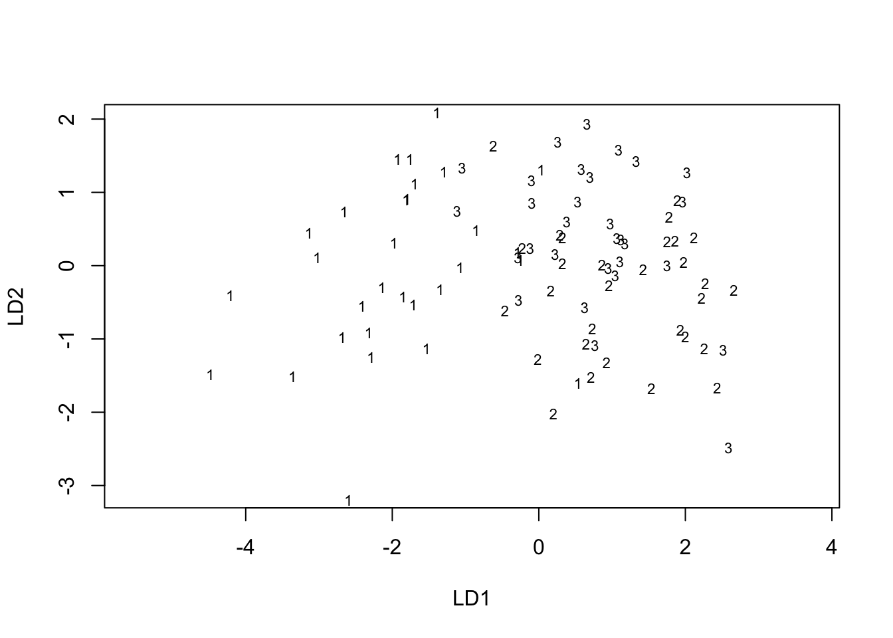

Chapter 8 Discriminant Analysis: description of group separation
8.1 Introduction
8.2 Discriminant Function for Two Vectors
8.2.1 Example 8.2
Samples of steel produced at two different rolling temperatures are compared in Table 8.1 (Kramer and Jensen 1969a).
The variables are:
\[y_1=\textit{yield point}\] \[y_2=\textit{ultimate strength}\]
# Data: Yield point and ultimate strenght of steel produced at two rolling temperatures
y1 <- c(33, 36, 35, 38, 40)
y2 <- c(60, 61, 64, 63, 65)
yield_strength_t1 <-data.frame(y1, y2)| y1 | y2 |
|---|---|
| 33 | 60 |
| 36 | 61 |
| 35 | 64 |
| 38 | 63 |
| 40 | 65 |
y1 <- c(35, 36, 38, 39, 41, 43, 41)
y2 <- c(57, 59, 59, 61, 63, 65, 59)
yield_strength_t2 <-data.frame(y1, y2)| y1 | y2 |
|---|---|
| 35 | 57 |
| 36 | 59 |
| 38 | 59 |
| 39 | 61 |
| 41 | 63 |
| 43 | 65 |
| 41 | 59 |
## Loading required package: ggplot2ggplot(NULL, aes(y1, y2)) +
geom_point(data = yield_strength_t1, colour="red") +
geom_point(data = yield_strength_t2)
If the points were proyected on either \(y_1\) or \(y_2\) axis, there would be considerable overlap. However it is clear from the figure above, that the two groups can be separated if they were projected in an appropiate direction.
So, we obtain the single dimension onto which the points would be projected: the discriminant function, given by:
\[z=a'y=a_1y_1+a_2y_2\]
We know that \(a\) is given by:
\[a=S_{pl}^{-1}(\bar{y}_{1}-\bar{y}_{2})\]
So, first we proceed to find:
- The means of each columns on each data frame:
y_mean_yield_strength_t1<-as.matrix(
apply(
yield_strength_t1, 2, FUN=mean
)
)
y_mean_yield_strength_t1## [,1]
## y1 36.4
## y2 62.6y_mean_yield_strength_t2<-as.matrix(
apply(
yield_strength_t2, 2, FUN=mean
)
)
y_mean_yield_strength_t2## [,1]
## y1 39.00000
## y2 60.42857- The common population variance:
common_population_variance <- function(data1, data2) {
"
"
n_1= nrow(data1)
n_2= nrow(data2)
sigma_1 <- cov(data1)
sigma_2 <- cov(data2)
sigma_population<-(1/(n_1+n_2-2))*((n_1-1) * sigma_1 + (n_2-1) * sigma_2)
print("The pooled covariance matrix is:")
print(sigma_population)
}
spl_rolling_temperatures<-common_population_variance(yield_strength_t1, yield_strength_t2)## [1] "The pooled covariance matrix is:"
## y1 y2
## y1 7.92 5.680000
## y2 5.68 6.291429## y1 y2
## y1 7.92 5.680000
## y2 5.68 6.291429Then, we have a:
a<-as.matrix(solve(spl_rolling_temperatures)%*%(y_mean_yield_strength_t1-y_mean_yield_strength_t2))
a## [,1]
## y1 -1.633377
## y2 1.819779It follows that the discriminant function is:
\[z=a'y=-1.633y_1+1.819y_2\]
And the values of the projected points are:
## y1
## 1 55.28530
## 2 52.20494
## 3 59.29766
## 4 52.57775
## 5 52.95055## y1
## 1 46.55921
## 2 48.56539
## 3 45.29863
## 4 47.30481
## 5 47.67762
## 6 48.05042
## 7 40.398508.3 Relantionship Between Two Group Discriminant Analysis and Multiple Regression
8.3.1 Example 8.3.
In example 5.6.2, the psychological data of \(Table 5.1\), were used in an illustration of the regression approach to computation of \(a\) and \(T^2\).
#pyschological data of males
y_1m <- c(17, 15, 15, 13, 20, 15, 15, 13, 14, 17, 17, 17, 15, 18, 18, 15, 18, 10, 18, 18, 13, 16, 11, 16, 16, 18, 16, 15, 18, 18, 17, 19)
y_2m <-c(15, 17, 14, 12, 17, 21, 13, 5, 7, 15, 17, 20, 15, 19, 18, 14, 17, 14, 21, 21, 17, 16, 15, 13, 13, 18, 15, 16, 19, 16, 20, 19)
y_3m <- c(32, 24, 29, 10, 26, 26, 26, 22, 30, 30, 26, 28, 29, 32, 31, 26, 33, 19, 30, 34, 30, 16, 25, 26, 23, 34, 28, 29, 32, 33, 21, 30)
y_4m <- c(26, 14, 23, 16, 28, 21, 22, 22, 17, 27, 20, 24, 24, 28, 27, 21, 26, 17, 29, 26, 24, 16, 23, 16, 21, 24, 27, 24, 23, 23, 21, 28)| y_1m | y_2m | y_3m | y_4m |
|---|---|---|---|
| 17 | 15 | 32 | 26 |
| 15 | 17 | 24 | 14 |
| 15 | 14 | 29 | 23 |
| 13 | 12 | 10 | 16 |
| 20 | 17 | 26 | 28 |
| 15 | 21 | 26 | 21 |
| 15 | 13 | 26 | 22 |
| 13 | 5 | 22 | 22 |
| 14 | 7 | 30 | 17 |
| 17 | 15 | 30 | 27 |
| 17 | 17 | 26 | 20 |
| 17 | 20 | 28 | 24 |
| 15 | 15 | 29 | 24 |
| 18 | 19 | 32 | 28 |
| 18 | 18 | 31 | 27 |
| 15 | 14 | 26 | 21 |
| 18 | 17 | 33 | 26 |
| 10 | 14 | 19 | 17 |
| 18 | 21 | 30 | 29 |
| 18 | 21 | 34 | 26 |
| 13 | 17 | 30 | 24 |
| 16 | 16 | 16 | 16 |
| 11 | 15 | 25 | 23 |
| 16 | 13 | 26 | 16 |
| 16 | 13 | 23 | 21 |
| 18 | 18 | 34 | 24 |
| 16 | 15 | 28 | 27 |
| 15 | 16 | 29 | 24 |
| 18 | 19 | 32 | 23 |
| 18 | 16 | 33 | 23 |
| 17 | 20 | 21 | 21 |
| 19 | 19 | 30 | 28 |
#pyschological data of females
y_1f <- c(
14, 13, 12, 12, 11, 12, 10, 10, 12, 11, 12, 14, 14, 13, 14, 13, 16, 14, 16, 13, 2, 14, 17, 16, 15, 12, 14, 13, 11, 7, 12, 6
)
y_2f <-c(
12, 14, 19, 13, 20, 9, 13, 8, 20, 10, 18, 18, 10, 16, 8, 16, 21, 17, 16, 16, 6, 16, 17, 13, 14, 10, 17, 15, 16, 7, 15, 5
)
y_3f <- c(
14, 12, 21, 10, 16, 14, 18, 13, 19, 11, 25, 13, 25, 8, 13, 23, 26, 14, 15, 23, 16, 22, 22, 16, 20, 12, 24, 18, 18, 19, 7, 6
)
y_4f <- c(
26, 21, 21, 16, 16, 18, 24, 23, 23, 27, 25, 26, 28, 14, 25, 28, 26, 14, 23, 24, 21, 26, 28, 14, 26, 9, 23, 20, 28, 18, 28, 13
)| y_1f | y_2f | y_3f | y_4f |
|---|---|---|---|
| 14 | 12 | 14 | 26 |
| 13 | 14 | 12 | 21 |
| 12 | 19 | 21 | 21 |
| 12 | 13 | 10 | 16 |
| 11 | 20 | 16 | 16 |
| 12 | 9 | 14 | 18 |
| 10 | 13 | 18 | 24 |
| 10 | 8 | 13 | 23 |
| 12 | 20 | 19 | 23 |
| 11 | 10 | 11 | 27 |
| 12 | 18 | 25 | 25 |
| 14 | 18 | 13 | 26 |
| 14 | 10 | 25 | 28 |
| 13 | 16 | 8 | 14 |
| 14 | 8 | 13 | 25 |
| 13 | 16 | 23 | 28 |
| 16 | 21 | 26 | 26 |
| 14 | 17 | 14 | 14 |
| 16 | 16 | 15 | 23 |
| 13 | 16 | 23 | 24 |
| 2 | 6 | 16 | 21 |
| 14 | 16 | 22 | 26 |
| 17 | 17 | 22 | 28 |
| 16 | 13 | 16 | 14 |
| 15 | 14 | 20 | 26 |
| 12 | 10 | 12 | 9 |
| 14 | 17 | 24 | 23 |
| 13 | 15 | 18 | 20 |
| 11 | 16 | 18 | 28 |
| 7 | 7 | 19 | 18 |
| 12 | 15 | 7 | 28 |
| 6 | 5 | 6 | 13 |
T2
#function for finding the T^2 in a multivariate two sample setting
T2_two_sample<- function(data1, data2) {
"
"
n_1 <<- nrow(data1)
n_2<<- nrow(data2)
sigma_1 <- cov(data1)
sigma_2 <- cov(data2)
y_mean_1<-as.matrix(
apply(data1, 2, FUN=mean
)
)
y_mean_2<-as.matrix(
apply(data2, 2, FUN=mean
)
)
sigma_population<-(
1/(n_1+n_2-2)
)*(
(n_1-1) * sigma_1 + (n_2-1) * sigma_2
)
sigma_population_inverse <- solve(sigma_population)
T2 <<- ((n_1*n_2)/(n_1+n_2))*t(y_mean_1-y_mean_2) %*% sigma_population_inverse %*% (y_mean_1-y_mean_2)
print("The pooled covariance matrix is:")
print(sigma_population)
print("The value of T2 is:")
print (T2)
}
T2<-T2_two_sample(data542_female, data542_male)## [1] "The pooled covariance matrix is:"
## y_1f y_2f y_3f y_4f
## y_1f 7.164315 6.047379 5.693044 4.700605
## y_2f 6.047379 15.894153 8.492440 5.855847
## y_3f 5.693044 8.492440 29.356351 13.980847
## y_4f 4.700605 5.855847 13.980847 22.320565
## [1] "The value of T2 is:"
## [,1]
## [1,] 97.6015discriminant_function <- function(data1, data2) {
"
This function determines the discriminat function coefficient vector
Input:
+ data1: dataset from sample 1
+ data2: dataset from sample 2
Output:
+ a: discriminant function coefficient vector
"
n_1 <<- nrow(data1)
n_2<<- nrow(data2)
sigma_1 <- cov(data1)
sigma_2 <- cov(data2)
y_mean_1<-as.matrix(
apply(data1, 2, FUN=mean
)
)
y_mean_2<-as.matrix(
apply(data2, 2, FUN=mean
)
)
sigma_population<-(
1/(n_1+n_2-2)
)*(
(n_1-1) * sigma_1 + (n_2-1) * sigma_2
)
sigma_population_inverse <- solve(sigma_population)
a <- as.matrix(sigma_population_inverse%*%(y_mean_1-y_mean_2))
print(
"The discriminant coeficient vector is: "
)
print(round(a, 4))
}
a<-discriminant_function(data542_female, data542_male)## [1] "The discriminant coeficient vector is: "
## [,1]
## y_1f -0.5104
## y_2f 0.2033
## y_3f -0.4660
## y_4f 0.3097We use the same data to obtain
We define b, as a vector of regression coefficients when \(w\) is fit to the \(y´s\)" \[b=\frac{n_1n_2}{(n_1+n_2)(n_1+n_2-2+T^2)}a\] , where \(T^2=[n_1n_2/(n_1+n_2)](\bar{y}_{1}-\bar{y}_{2})'S_{pl}^{-1}(\bar{y}_1 - \bar{y}_2)\).
From (5.20), we also know the squared multiple correlation \(R^2\) is related to \(T^2\) by:
\[R^2=(\bar{y}_{1}- \bar{y}_{2})'b=\frac{T^2}{n_1+n_2-2+T^2}\]
b
regression_coefficientes <- function(data1, data2, a, T2) {
"
"
n_1= nrow(data1)
n_2= nrow(data2)
b <- as.double((n_1*n_2)/((n_1 + n_2)*(n_1+ n_2-2+T2)))*a
#b <- as.matrix((n_1* n_2/((n_1 + n_2)%*%(n_1+ n_2-2+T2)))*a)
print("The vector of regression coefficientes is:")
print(b)
}
regression_coefficientes(data542_female, data542_male,a,T2)## [1] "The vector of regression coefficientes is:"
## [,1]
## y_1f -0.05116744
## y_2f 0.02038076
## y_3f -0.04671635
## y_4f 0.03104733R2
r2 <- function(data1, data2,T2) {
"
Function to obtain the squared multiple correlation R2
"
n_1= nrow(data1)
n_2= nrow(data2)
r2 <- round(as.double(T2/(n_1+n_2-2+T2)),4)
print(paste0("The squared multiple correlation (R2) is: ", r2))
}
r2(data542_female, data542_male, T2)## [1] "The squared multiple correlation (R2) is: 0.6115"8.4 Discriminant Analysis For Several Groups
8.4.1 Example 8.4.1.
The data in Table 8.3 were collected by G.R.Bryce and R. M. Baker as part of a preliminary study of possible link between football helmet design and neck injuries.
Six head measurements were made on the subject. There were 30 subjects in each of the three groups: high school football players (group 1), college football playes (group 2); and nonfootball players(group 3). The six variables are:
\[ wdim = \textit{head width at widest dimension}\] \[ circum = \textit{head circumference}\] \[fbeye = \textit{front-to-back measurements at eye level}\]
\[eyehd = \textit{eye-to-top-of-head measurements}\] \[earhd = \textit{ear-to-top-of-head measurements}\] \[jaw = \textit{jaw width}\]
footballHeads <-read.table("T8_3_FOOTBALL.DAT")
names(footballHeads) <- c("group", "wdim", "circum", "fbeye", "eyehd", "earhd", "jaw")
footballHeads[, 'group'] <- as.factor(footballHeads[, 'group'])
footballHeads## group wdim circum fbeye eyehd earhd jaw
## 1 1 13.5 57.15 19.50 12.5 14.0 11.0
## 2 1 15.5 58.42 21.00 12.0 16.0 12.0
## 3 1 14.5 55.88 19.00 10.0 13.0 12.0
## 4 1 15.5 58.42 20.00 13.5 15.0 12.0
## 5 1 14.5 58.42 20.00 13.0 15.5 12.0
## 6 1 14.0 60.96 21.00 12.0 14.0 13.0
## 7 1 15.0 58.42 19.50 13.5 15.5 13.0
## 8 1 15.0 58.42 21.00 13.0 14.0 13.0
## 9 1 15.5 59.69 20.50 13.5 14.5 12.5
## 10 1 15.5 59.69 20.50 13.0 15.0 13.0
## 11 1 15.0 57.15 19.00 14.0 14.5 11.5
## 12 1 15.5 59.69 21.00 13.0 16.0 12.5
## 13 1 16.0 57.15 19.00 14.0 14.5 12.0
## 14 1 15.5 62.23 21.50 14.0 16.0 12.0
## 15 1 15.5 57.15 19.50 13.5 15.0 12.0
## 16 1 14.0 60.96 20.00 15.0 15.0 12.0
## 17 1 14.5 58.42 20.00 12.0 14.5 12.0
## 18 1 15.0 56.90 19.00 13.0 14.0 12.5
## 19 1 15.5 59.69 20.00 12.5 14.0 12.5
## 20 1 15.0 57.15 19.50 12.0 14.0 11.0
## 21 1 15.0 56.90 19.00 12.0 13.0 12.0
## 22 1 15.5 56.90 19.50 14.5 14.5 13.0
## 23 1 17.5 63.50 21.50 14.0 15.5 13.5
## 24 1 15.5 57.15 19.00 13.0 15.5 12.5
## 25 1 15.5 60.96 20.50 12.0 13.0 12.5
## 26 1 15.5 60.96 21.00 14.5 15.5 12.5
## 27 1 15.5 63.50 21.75 14.5 16.5 13.5
## 28 1 14.5 58.42 20.50 13.0 16.0 10.5
## 29 1 15.5 56.90 20.00 13.5 14.0 12.0
## 30 1 16.0 60.96 20.00 12.5 14.5 12.5
## 31 2 15.5 59.69 21.10 10.3 13.4 12.4
## 32 2 15.4 59.70 20.00 12.8 14.5 11.3
## 33 2 15.1 59.70 20.20 11.4 14.1 12.1
## 34 2 14.3 56.90 18.90 11.0 13.4 11.0
## 35 2 14.8 58.00 20.10 9.6 11.1 11.7
## 36 2 15.2 57.50 18.50 9.9 12.8 11.4
## 37 2 15.4 58.00 20.80 10.2 12.8 11.9
## 38 2 16.3 58.00 20.10 8.8 13.0 12.9
## 39 2 15.5 57.00 19.60 10.5 13.9 11.8
## 40 2 15.0 56.50 19.60 10.4 14.5 12.0
## 41 2 15.5 57.20 20.00 11.2 13.4 12.4
## 42 2 15.5 56.50 19.80 9.2 12.8 12.2
## 43 2 15.7 57.50 19.80 11.8 12.6 12.5
## 44 2 14.4 57.00 20.40 10.2 12.7 12.3
## 45 2 14.9 54.80 18.50 11.2 13.8 11.3
## 46 2 16.5 59.80 20.20 9.4 14.3 12.2
## 47 2 15.5 56.10 18.80 9.8 13.8 12.6
## 48 2 15.3 55.00 19.00 10.1 14.2 11.6
## 49 2 14.5 55.60 19.30 12.0 12.6 11.6
## 50 2 15.5 56.50 20.00 9.9 13.4 11.5
## 51 2 15.2 55.00 19.30 9.9 14.4 11.9
## 52 2 15.3 56.50 19.30 9.1 12.8 11.7
## 53 2 15.3 56.80 20.20 8.6 14.2 11.5
## 54 2 15.8 55.50 19.20 8.2 13.0 12.6
## 55 2 14.8 57.00 20.20 9.8 13.8 10.5
## 56 2 15.2 56.90 19.10 9.6 13.0 11.2
## 57 2 15.9 58.80 21.00 8.6 13.5 11.8
## 58 2 15.5 57.30 20.10 9.6 14.1 12.3
## 59 2 16.5 58.00 19.50 9.0 13.9 13.3
## 60 2 17.3 62.60 21.50 10.3 13.8 12.8
## 61 3 14.9 56.50 20.40 7.4 13.0 12.0
## 62 3 15.4 57.50 19.50 10.5 13.8 11.5
## 63 3 15.3 55.40 19.20 9.7 13.3 11.5
## 64 3 14.6 56.00 19.80 8.5 12.0 11.5
## 65 3 16.2 56.50 19.50 11.5 14.5 11.8
## 66 3 14.6 58.00 19.90 13.0 13.4 11.5
## 67 3 15.9 56.70 18.70 10.8 12.8 12.6
## 68 3 14.7 55.80 18.70 11.1 13.9 11.2
## 69 3 15.5 58.50 19.40 11.5 13.4 11.9
## 70 3 16.1 60.00 20.30 10.6 13.7 12.2
## 71 3 15.2 57.80 19.90 10.4 13.5 11.4
## 72 3 15.1 56.00 19.40 10.0 13.1 10.9
## 73 3 15.9 59.80 20.50 12.0 13.6 11.5
## 74 3 16.1 57.70 19.70 10.2 13.6 11.5
## 75 3 15.7 58.70 20.70 11.3 13.6 11.3
## 76 3 15.3 56.90 19.60 10.5 13.5 12.1
## 77 3 15.3 56.90 19.50 9.9 14.0 12.1
## 78 3 15.2 58.00 20.60 11.0 15.1 11.7
## 79 3 16.6 59.30 19.90 12.1 14.6 12.1
## 80 3 15.5 58.20 19.70 11.7 13.8 12.1
## 81 3 15.8 57.50 18.90 11.8 14.7 11.8
## 82 3 16.0 57.20 19.80 10.8 13.9 12.0
## 83 3 15.4 57.00 19.80 11.3 14.0 11.4
## 84 3 16.0 59.20 20.80 10.4 13.8 12.2
## 85 3 15.4 57.60 19.60 10.2 13.9 11.7
## 86 3 15.8 60.30 20.80 12.4 13.4 12.1
## 87 3 15.4 55.00 18.80 10.7 14.2 10.8
## 88 3 15.5 58.40 19.80 13.1 14.5 11.7
## 89 3 15.7 59.00 20.40 12.1 13.0 12.7
## 90 3 17.3 61.70 20.70 11.9 13.3 13.3| group | wdim | circum | fbeye | eyehd | earhd | jaw |
|---|---|---|---|---|---|---|
| 1 | 13.5 | 57.15 | 19.50 | 12.5 | 14.0 | 11.0 |
| 1 | 15.5 | 58.42 | 21.00 | 12.0 | 16.0 | 12.0 |
| 1 | 14.5 | 55.88 | 19.00 | 10.0 | 13.0 | 12.0 |
| 1 | 15.5 | 58.42 | 20.00 | 13.5 | 15.0 | 12.0 |
| 1 | 14.5 | 58.42 | 20.00 | 13.0 | 15.5 | 12.0 |
| 1 | 14.0 | 60.96 | 21.00 | 12.0 | 14.0 | 13.0 |
| 1 | 15.0 | 58.42 | 19.50 | 13.5 | 15.5 | 13.0 |
| 1 | 15.0 | 58.42 | 21.00 | 13.0 | 14.0 | 13.0 |
| 1 | 15.5 | 59.69 | 20.50 | 13.5 | 14.5 | 12.5 |
| 1 | 15.5 | 59.69 | 20.50 | 13.0 | 15.0 | 13.0 |
| 1 | 15.0 | 57.15 | 19.00 | 14.0 | 14.5 | 11.5 |
| 1 | 15.5 | 59.69 | 21.00 | 13.0 | 16.0 | 12.5 |
| 1 | 16.0 | 57.15 | 19.00 | 14.0 | 14.5 | 12.0 |
| 1 | 15.5 | 62.23 | 21.50 | 14.0 | 16.0 | 12.0 |
| 1 | 15.5 | 57.15 | 19.50 | 13.5 | 15.0 | 12.0 |
| 1 | 14.0 | 60.96 | 20.00 | 15.0 | 15.0 | 12.0 |
| 1 | 14.5 | 58.42 | 20.00 | 12.0 | 14.5 | 12.0 |
| 1 | 15.0 | 56.90 | 19.00 | 13.0 | 14.0 | 12.5 |
| 1 | 15.5 | 59.69 | 20.00 | 12.5 | 14.0 | 12.5 |
| 1 | 15.0 | 57.15 | 19.50 | 12.0 | 14.0 | 11.0 |
| 1 | 15.0 | 56.90 | 19.00 | 12.0 | 13.0 | 12.0 |
| 1 | 15.5 | 56.90 | 19.50 | 14.5 | 14.5 | 13.0 |
| 1 | 17.5 | 63.50 | 21.50 | 14.0 | 15.5 | 13.5 |
| 1 | 15.5 | 57.15 | 19.00 | 13.0 | 15.5 | 12.5 |
| 1 | 15.5 | 60.96 | 20.50 | 12.0 | 13.0 | 12.5 |
| 1 | 15.5 | 60.96 | 21.00 | 14.5 | 15.5 | 12.5 |
| 1 | 15.5 | 63.50 | 21.75 | 14.5 | 16.5 | 13.5 |
| 1 | 14.5 | 58.42 | 20.50 | 13.0 | 16.0 | 10.5 |
| 1 | 15.5 | 56.90 | 20.00 | 13.5 | 14.0 | 12.0 |
| 1 | 16.0 | 60.96 | 20.00 | 12.5 | 14.5 | 12.5 |
| 2 | 15.5 | 59.69 | 21.10 | 10.3 | 13.4 | 12.4 |
| 2 | 15.4 | 59.70 | 20.00 | 12.8 | 14.5 | 11.3 |
| 2 | 15.1 | 59.70 | 20.20 | 11.4 | 14.1 | 12.1 |
| 2 | 14.3 | 56.90 | 18.90 | 11.0 | 13.4 | 11.0 |
| 2 | 14.8 | 58.00 | 20.10 | 9.6 | 11.1 | 11.7 |
| 2 | 15.2 | 57.50 | 18.50 | 9.9 | 12.8 | 11.4 |
| 2 | 15.4 | 58.00 | 20.80 | 10.2 | 12.8 | 11.9 |
| 2 | 16.3 | 58.00 | 20.10 | 8.8 | 13.0 | 12.9 |
| 2 | 15.5 | 57.00 | 19.60 | 10.5 | 13.9 | 11.8 |
| 2 | 15.0 | 56.50 | 19.60 | 10.4 | 14.5 | 12.0 |
| 2 | 15.5 | 57.20 | 20.00 | 11.2 | 13.4 | 12.4 |
| 2 | 15.5 | 56.50 | 19.80 | 9.2 | 12.8 | 12.2 |
| 2 | 15.7 | 57.50 | 19.80 | 11.8 | 12.6 | 12.5 |
| 2 | 14.4 | 57.00 | 20.40 | 10.2 | 12.7 | 12.3 |
| 2 | 14.9 | 54.80 | 18.50 | 11.2 | 13.8 | 11.3 |
| 2 | 16.5 | 59.80 | 20.20 | 9.4 | 14.3 | 12.2 |
| 2 | 15.5 | 56.10 | 18.80 | 9.8 | 13.8 | 12.6 |
| 2 | 15.3 | 55.00 | 19.00 | 10.1 | 14.2 | 11.6 |
| 2 | 14.5 | 55.60 | 19.30 | 12.0 | 12.6 | 11.6 |
| 2 | 15.5 | 56.50 | 20.00 | 9.9 | 13.4 | 11.5 |
| 2 | 15.2 | 55.00 | 19.30 | 9.9 | 14.4 | 11.9 |
| 2 | 15.3 | 56.50 | 19.30 | 9.1 | 12.8 | 11.7 |
| 2 | 15.3 | 56.80 | 20.20 | 8.6 | 14.2 | 11.5 |
| 2 | 15.8 | 55.50 | 19.20 | 8.2 | 13.0 | 12.6 |
| 2 | 14.8 | 57.00 | 20.20 | 9.8 | 13.8 | 10.5 |
| 2 | 15.2 | 56.90 | 19.10 | 9.6 | 13.0 | 11.2 |
| 2 | 15.9 | 58.80 | 21.00 | 8.6 | 13.5 | 11.8 |
| 2 | 15.5 | 57.30 | 20.10 | 9.6 | 14.1 | 12.3 |
| 2 | 16.5 | 58.00 | 19.50 | 9.0 | 13.9 | 13.3 |
| 2 | 17.3 | 62.60 | 21.50 | 10.3 | 13.8 | 12.8 |
| 3 | 14.9 | 56.50 | 20.40 | 7.4 | 13.0 | 12.0 |
| 3 | 15.4 | 57.50 | 19.50 | 10.5 | 13.8 | 11.5 |
| 3 | 15.3 | 55.40 | 19.20 | 9.7 | 13.3 | 11.5 |
| 3 | 14.6 | 56.00 | 19.80 | 8.5 | 12.0 | 11.5 |
| 3 | 16.2 | 56.50 | 19.50 | 11.5 | 14.5 | 11.8 |
| 3 | 14.6 | 58.00 | 19.90 | 13.0 | 13.4 | 11.5 |
| 3 | 15.9 | 56.70 | 18.70 | 10.8 | 12.8 | 12.6 |
| 3 | 14.7 | 55.80 | 18.70 | 11.1 | 13.9 | 11.2 |
| 3 | 15.5 | 58.50 | 19.40 | 11.5 | 13.4 | 11.9 |
| 3 | 16.1 | 60.00 | 20.30 | 10.6 | 13.7 | 12.2 |
| 3 | 15.2 | 57.80 | 19.90 | 10.4 | 13.5 | 11.4 |
| 3 | 15.1 | 56.00 | 19.40 | 10.0 | 13.1 | 10.9 |
| 3 | 15.9 | 59.80 | 20.50 | 12.0 | 13.6 | 11.5 |
| 3 | 16.1 | 57.70 | 19.70 | 10.2 | 13.6 | 11.5 |
| 3 | 15.7 | 58.70 | 20.70 | 11.3 | 13.6 | 11.3 |
| 3 | 15.3 | 56.90 | 19.60 | 10.5 | 13.5 | 12.1 |
| 3 | 15.3 | 56.90 | 19.50 | 9.9 | 14.0 | 12.1 |
| 3 | 15.2 | 58.00 | 20.60 | 11.0 | 15.1 | 11.7 |
| 3 | 16.6 | 59.30 | 19.90 | 12.1 | 14.6 | 12.1 |
| 3 | 15.5 | 58.20 | 19.70 | 11.7 | 13.8 | 12.1 |
| 3 | 15.8 | 57.50 | 18.90 | 11.8 | 14.7 | 11.8 |
| 3 | 16.0 | 57.20 | 19.80 | 10.8 | 13.9 | 12.0 |
| 3 | 15.4 | 57.00 | 19.80 | 11.3 | 14.0 | 11.4 |
| 3 | 16.0 | 59.20 | 20.80 | 10.4 | 13.8 | 12.2 |
| 3 | 15.4 | 57.60 | 19.60 | 10.2 | 13.9 | 11.7 |
| 3 | 15.8 | 60.30 | 20.80 | 12.4 | 13.4 | 12.1 |
| 3 | 15.4 | 55.00 | 18.80 | 10.7 | 14.2 | 10.8 |
| 3 | 15.5 | 58.40 | 19.80 | 13.1 | 14.5 | 11.7 |
| 3 | 15.7 | 59.00 | 20.40 | 12.1 | 13.0 | 12.7 |
| 3 | 17.3 | 61.70 | 20.70 | 11.9 | 13.3 | 13.3 |
The eigen values of \(E^-1H\) are:
data_means <- round(sapply(data_group, function(x) {
apply(x, 2, mean)
}, simplify = 'data.frame'),2)
data_means## 1 2 3
## wdim 15.20 15.42 15.58
## circum 58.94 57.38 57.77
## fbeye 20.11 19.80 19.81
## eyehd 13.08 10.08 10.95
## earhd 14.73 13.45 13.70
## jaw 12.27 11.94 11.80## wdim circum fbeye eyehd earhd jaw
## 15.40 58.03 19.91 11.37 13.96 12.00## [1] 30# Nrow: number of dependent variables
# Ncol: number of dependent variables
# H Matrix
H = matrix(data = 0, nrow = (ncol(footballHeads)-1), ncol =(ncol(footballHeads)-1))
for (i in 1:dim(H)[1]) {
for (j in 1:i) {
H[i,j] <- n * sum((data_means[i,] - total_means[i]) * (data_means[j,] - total_means[j]))
H[j,i] <- n * sum((data_means[j,] - total_means[j]) * (data_means[i,] - total_means[i]))
}
}# E Matrix
E = matrix(data = 0, nrow = (ncol(footballHeads)-1), ncol =(ncol(footballHeads)-1))
for (i in 1:dim(E)[1]) {
for (j in 1:i) {
b <- c()
for (k in data_group) {
a <- sum((k[,i] - mean(k[,i])) * (k[,j] - mean(k[,j])))
b <- append(b, a)
}
E[i,j] <- sum(b)
E[j,i] <- sum(b)
}
}## [,1] [,2] [,3] [,4] [,5] [,6]
## [1,] 37.2560 50.2812 13.7390 7.2900 10.8360 19.8360
## [2,] 50.2812 275.0151 88.7378 56.7853 29.5855 43.9434
## [3,] 13.7390 88.7378 47.4971 6.6822 11.1873 13.8430
## [4,] 7.2900 56.7853 6.6822 107.2243 27.3833 3.6947
## [5,] 10.8360 29.5855 11.1873 27.3833 53.7710 0.7943
## [6,] 19.8360 43.9434 13.8430 3.6947 0.7943 32.6700## [,1] [,2] [,3] [,4] [,5] [,6]
## [1,] 2.184 -7.254 -1.806 -13.302 -6.330 -2.736
## [2,] -7.254 39.546 8.385 75.114 32.994 10.101
## [3,] -1.806 8.385 1.863 15.777 7.083 2.418
## [4,] -13.302 75.114 15.777 142.938 62.514 18.693
## [5,] -6.330 32.994 7.083 62.514 27.618 8.715
## [6,] -2.736 10.101 2.418 18.693 8.715 3.495Then the two eigenvalues are:
## [1] 1.919 0.116 0.000 0.000 0.000 0.000\[\lambda_1=1.919\] \[\lambda_2=0.116\]
The corresponding eigenvectors are \(LD1\) and \(LD2\).
if(!require("MASS")){
install.packages("MASS")
library(MASS)
}
lda_footballHeads <- lda(group ~ ., data = footballHeads)
lda_footballHeads$scaling## LD1 LD2
## wdim 0.948423100 1.4067750094
## circum -0.003639865 -0.0005126312
## fbeye -0.006439599 -0.0286176430
## eyehd -0.647483088 0.5402700415
## earhd -0.504360916 -0.3839132257
## jaw -0.828535064 -1.5288556226\(LD1\):
\[a_1=\begin{pmatrix} 0.948423100 \\ -0.003639865 \\ -0.006439599\\ -0.647483088\\ -0.504360916\\ -0.828535064 \end{pmatrix}\]
\(LD2\):
\[a_2=\begin{pmatrix} 1.4067750094\\ -0.0286176430\\ 0.5402700415\\ -0.3839132257\\ -1.5288556226 \end{pmatrix}\]

The first eigenvalue accounts for a sustantial proportion of the total:
## [1] 0.9429084Thus the mean vectors lie largely in one dimension, and one discriminant function suffices to describe most of the separation among the three groups.
8.4.2 Example 8.4.2.
For the football data of Table 8.3, we obtain the squared canonical correlation between each of the two discriminant functions and the grouping of the variables.
## [1] 1.919458## [1] 0.657## [1] 0.1048.5 Standarized Discriminant Functions
8.5.1 Example 8.5.
In Example \(8.4.1\), we obtained the discriminant function coefficient vectors \(a_1\) and \(a_2\) for the football data of Table \(8.3\). Since \(\lambda_1/(\lambda_1+\lambda_2)=0.94\), we concentrate on \(a_1\). To standarize \(a_1\), we need the within sample standard deviations of the variables. The pooled covariance matrix is given by:
\(S_{pl}=E/87\)
## [,1] [,2] [,3] [,4] [,5] [,6]
## [1,] 0.4282299 0.5779448 0.1579195 0.08379310 0.124551724 0.228000000
## [2,] 0.5779448 3.1610931 1.0199747 0.65270460 0.340063218 0.505096552
## [3,] 0.1579195 1.0199747 0.5459437 0.07680690 0.128589655 0.159114943
## [4,] 0.0837931 0.6527046 0.0768069 1.23246322 0.314750575 0.042467816
## [5,] 0.1245517 0.3400632 0.1285897 0.31475057 0.618057471 0.009129885
## [6,] 0.2280000 0.5050966 0.1591149 0.04246782 0.009129885 0.375517241Using the square roots of the diagonal elements of \(S_{pl}\), we obtain:
## LD1 LD2
## wdim 0.948423100 1.4067750094
## circum -0.003639865 -0.0005126312
## fbeye -0.006439599 -0.0286176430
## eyehd -0.647483088 0.5402700415
## earhd -0.504360916 -0.3839132257
## jaw -0.828535064 -1.5288556226## [1] 0.948423100 -0.003639865 -0.006439599 -0.647483088 -0.504360916
## [6] -0.828535064## [1] 0.620641211 -0.006471485 -0.004758091 -0.718812156 -0.396511562
## [6] -0.507721826\[a_1^*=\begin{pmatrix} 0.620641211 \\ -0.006471485\\ -0.004758091\\ -0.718812156\\ -0.396511562\\ -0.507721826 \end{pmatrix}\]
Thus the fourth, first, sixth and fifth variables contribute de most to separating the groups, in that order. The second and thrid variables are not useful (in the presence of the others) in distinguishing groups.
8.6 Test of Significance
8.6.1 Example 8.6.2
We test the significance of the two discriminant functions obtained in Example \(8.4.1.\) for the football data. For the overall test we have, by \(8.18\).
Thus \(p-value\) for $F